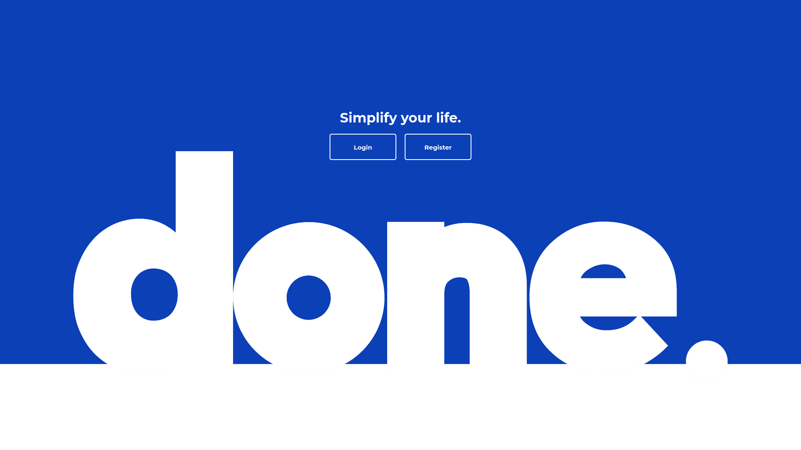

DONE
- React
- Styled-Components
- NodeJS
- ExpressJS
- MySQL
- JsonWebToken
github

"Done" illustrates my journey in full-stack development, demonstrating my ability to create user-friendly apps that streamline task management and journaling. Using React, Node, and Express, I built a platform with features like dynamic task scheduling and sharing. I included a Pomodoro timer, journaling tools, and detailed statistics to boost productivity. By mastering various technologies and refining my skills, "Done" showcases my dedication to delivering modern web solutions that help users get things done efficiently.